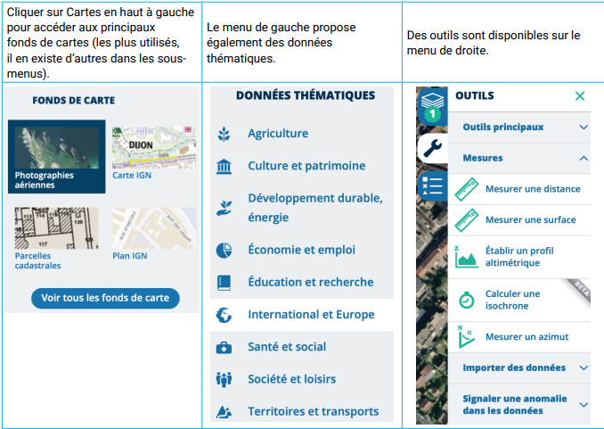

| Contenus | Capacités attendues |
|---|---|
| GPS, Galileo | Décrire le principe de fonctionnement de la géolocalisation. |
| Cartes numériques | Identifier les différentes couches d’information de GeoPortail pour extraire différents types de données. |
La première partie de cette activité propose de comprendre le principe de fonctionnement de la géolocalisation. Vous devrez répondre à des questions à partir de documents (vidéos).
La seconde partie de cette activité propose d’utiliser Géoportail. Vous devez répondre à une série de questions qui vous permet de découvrir certaines fonctionnalités de Géoportail comme les différents fonds de cartes, les données thématiques et certains outils. Celles-ci proposent des situations qui vous encouragent à chercher, analyser et trouver les éléments qui permettent de répondre à la question.
Géoportail est un logiciel en ligne donnant accès à des services de recherche et de visualisation de données géographiques ou géolocalisées. L’opérateur principal de GéoPortail est l’IGN (Institut Géographique National).
Ce site de service public qui date de 2007 contient également de nombreuses données classées par thèmes : parcelles cadastrales, espaces protégés, zones de sismicité, zones urbaines sensibles, ...
GéoPortail permet de superposer une multitude de couches différentes sur des domaines très variés. Cartes numériques accessibles depuis les ordinateurs, tablettes et téléphones, bien plus souples à l’usage que les cartes papier. Les cartes numériques rassemblent toutes les échelles et permettent de montrer différents aspects de la région visualisée sur une seule carte.
Saisir https://www.geoportail.gouv.fr/ dans votre navigateur afin d’accéder à Geoportail puis cliquer sur Rechercher. Vous pourrez alors localiser une adresse, mesurer des parcelles, accéder à des données thématiques,...
Des tutoriels sont disponibles à l’adresse https://www.geoportail.gouv.fr/tutoriels.